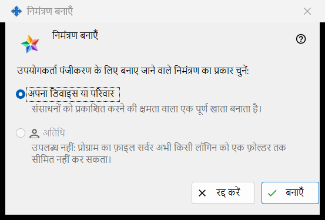
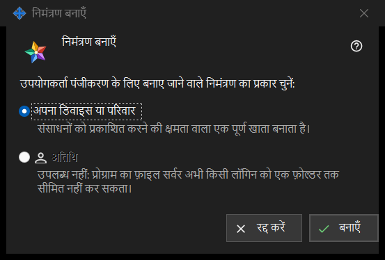

निमंत्रण बनाएँ
यह किस लिए है
यह छोटी विंडो पूछती है कि नया निमंत्रण किस तरह का खाता बनाएगा। इसे एक्सचेंज सर्वर सेटिंग के समूह निमंत्रण में मौजूद बटन निमंत्रण बनाएँ.. से खोलें; मैनेजर के सर्वर तक पहुँचते ही यह समूह दिखने लगता है।


इस क्रम में
- एक्सचेंज सर्वर सेटिंग में समूह निमंत्रण खोजें और बटन निमंत्रण बनाएँ.. दबाएँ।
- अपना डिवाइस या परिवार को चुना हुआ रहने दें।
- बनाएँ दबाएँ।
- विंडो निमंत्रण बन गया खुलती है और कोड एक ही बार दिखाती है: उसे वहीं से कॉपी करें। कुछ भी बनाए बिना निकलने के लिए रद्द करें दबाएँ या Esc दबाएँ।
तत्व
निमंत्रण का प्रकार
विंडो का प्रश्न उपयोगकर्ता पंजीकरण के लिए बनाए जाने वाले निमंत्रण का प्रकार चुनें: दो रेडियो बटन देता है। अपना डिवाइस या परिवार पहले से चुना होता है, और उसके नीचे की पंक्ति कहती है: संसाधनों को प्रकाशित करने की क्षमता वाला एक पूर्ण खाता बनाता है। निमंत्रण का उपयोग करने वाला व्यक्ति अपना लॉगिन और पासवर्ड खुद दर्ज करता है।
बनाएँ
बटन बनाएँ सर्वर से एक बार उपयोग होने वाला निमंत्रण माँगता है। सफल होने पर कोड वाली विंडो खुलती है और सेटिंग पेज पर यह पंक्ति दिखती है: निमंत्रण सफलतापूर्वक बन गया। सर्वर मना कर दे तो कारण पेज पर दिखता है और कोड वाली विंडो नहीं खुलती। सूची हर निमंत्रण को उसके प्रकार, बनने के समय, स्थिति और हैश से दिखाती है, कोड से कभी नहीं।
निमंत्रण वापस लेना
पहले से बने निमंत्रण को रद्द करने के लिए उसे सूची में चुनें और रद्द करें दबाएँ। पुष्टि के बाद उसका कोड काम करना बंद कर देता है।
रद्द करें
बटन रद्द करें या Esc विंडो बंद कर देते हैं और कुछ नहीं बनाते।
प्रबंधक सेटिंग · SFTP साझाकरण सेटिंग · एक्सचेंज सर्वर सेटिंग